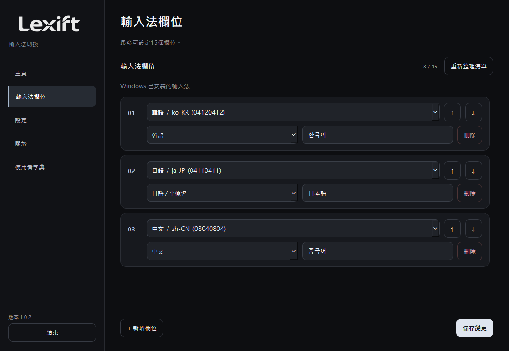
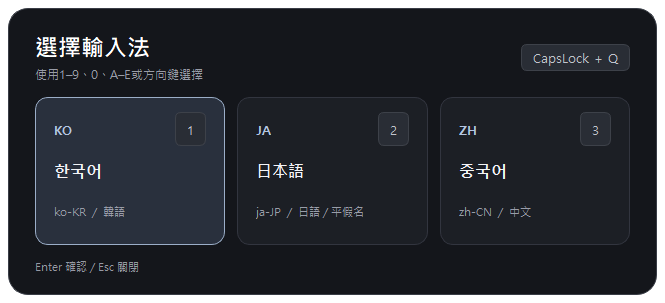
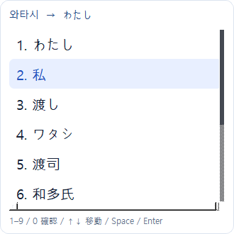
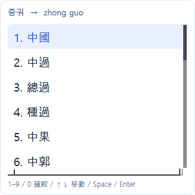
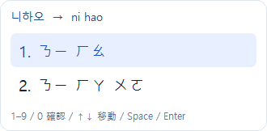
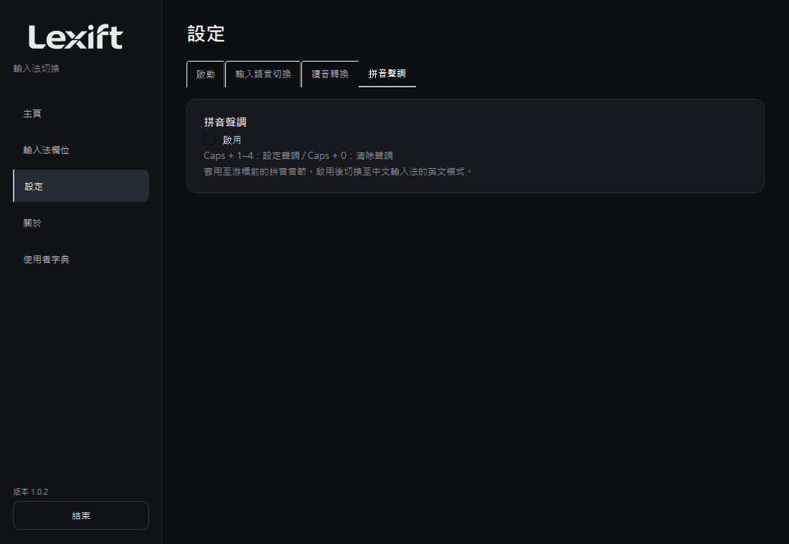
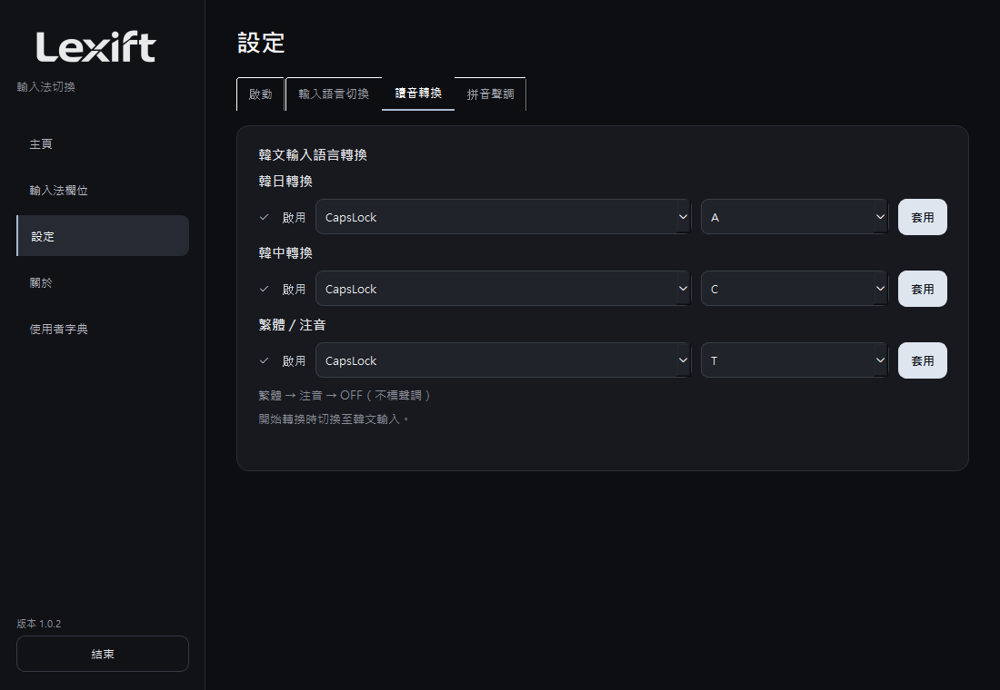
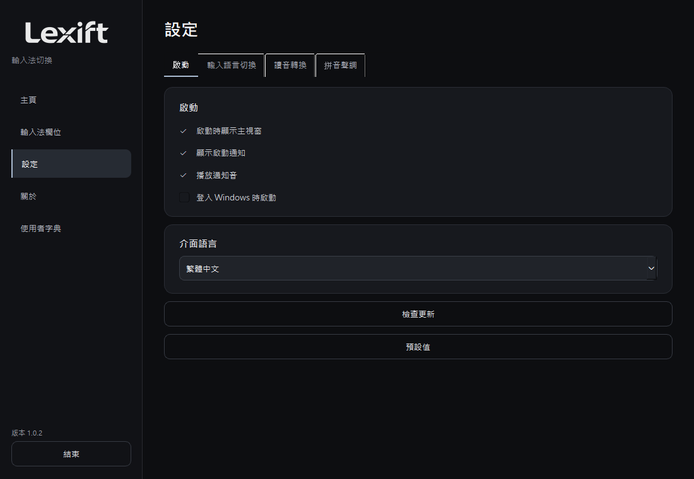
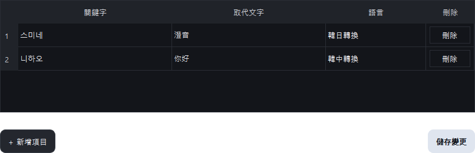

使用說明
概述
切換輸入法，依讀音輸入，全程使用鍵盤。
Windows 10 / 11 x64。可攜版不需安裝 Python。
下載 1.0.2 ↗安裝與啟動
解壓縮 ZIP 後執行 Lexift.exe。在 Windows 安裝所需輸入法，再加入輸入槽位。

切換輸入法
按 Caps + Q 開啟輸入法清單。使用方向鍵與 Enter，或按顯示的編號選取。

日文輸入
在輸入欄按 Caps + A，再以韓文輸入日文讀音。例如：와타시 → 私。再次按快速鍵關閉。

候選操作：↑↓ 移動；Space / Enter 確認；1–9 / 0 依編號選取；Esc 關閉。
開始讀音轉換時自動切換至韓文輸入。此功能供韓語讀音輸入使用，部分環境可能不受支援。
簡體中文
按 Caps + C，以韓文輸入華語讀音。例如：니하오 → 你好。候選以簡體顯示。

繁體與注音
Caps + T 依序切換繁體 → 注音 → OFF。例如：중궈 → 中國；니하오 → ㄋㄧ ㄏㄠ。注音不自動推斷聲調。


拼音聲調
在設定中啟用「拼音聲調」。回到輸入欄後，中文輸入法切換為英文模式。輸入拼音後按 Caps + 1–4 指定聲調，Caps + 0 清除聲調。
hao → hǎo（Caps + 3），liu → liú（Caps + 2），gui → guǐ（Caps + 3）。以空格或單引號分隔音節。關閉此功能後，專用快速鍵也會停用。

設定
分為啟動、輸入語言切換、讀音轉換及拼音聲調。勾選「啟用」控制功能，按「套用」儲存快速鍵。衝突的快速鍵無法儲存。


「預設值」會重設快速鍵、功能設定及自訂詞典。請確認後執行。
自訂詞典
輸入關鍵字、取代文字與語言後儲存。例如：스미네 / 澄音 / 韓日轉換。使用各列右側按鈕個別刪除。

疑難排解
沒有候選時，請確認功能開關與輸入法安裝狀態。日文轉換需要 Microsoft 日文輸入法。密碼欄等受保護區域及部分限制協助工具的控制項不受支援。
候選引擎於使用時載入，轉換結束三秒後釋放。總記憶體用量取決於輸入法及使用狀態。
GitHub Issues ↗